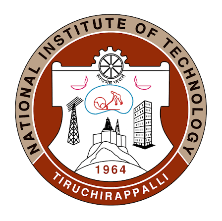
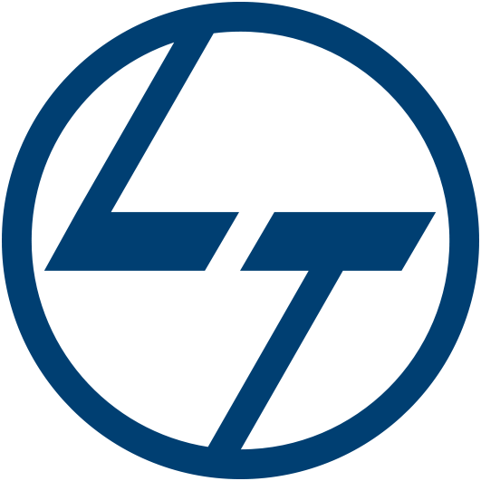

Hi all, I’m Rupesh.
I work on robotic systems that bring together mechanical design, control, simulation, and software — from physical robot platforms to motion-planning algorithms.
Engineering, Design
& Intelligent Systems.
I work across mechanical engineering, robotics, simulation, control, and software, building and testing systems that connect physical hardware with computational models. My projects range from a mobile manipulator and a neck rehabilitation mechanism to robot pathfinding and multi-agent planning.
As President and Robotics Engineer at Spider R&D, NIT Trichy’s research and development club, I help lead technical initiatives and work with students on robotics projects spanning design, electronics, control, and simulation. My internships have also given me experience in ROS 2-based motion planning and multi-UAV control simulation. I’m interested in robotics, autonomous systems, mechanical engineering, and research opportunities.
Education.
National Institute of Technology Tiruchirappalli
B.Tech. Mechanical Engineering
Minor in Computer Science Engineering
Aug. 2023 – Present
CGPA: 8.75 / 10 (through Semester VI)

Relevant Coursework
Mechanics of Machines · Engineering Mechanics · Strength of Materials · Fluid Mechanics · Design of Machine Elements · Vehicle Dynamics · Computer-Aided Design · Mechatronics · MEMS Design and Fabrication · Mathematical Methods for Mechanical Engineers · Matrices and Calculus · Complex Analysis and Differential Equations · Fourier Transforms and Numerical Techniques · Applied Electrical and Electronics Engineering · Artificial Intelligence · Data Structures and Algorithms
Certifications
MATLAB Onramp · Simulink Onramp · Introduction to IoT · Introduction to Machine Learning · Deep Learning Onramp
Class XII — The Pupil Saveetha Eco School
Higher Secondary Education · Chennai
May 2022 – July 2023
Percentage: 96.60%
Internships &
Industry Experience
ROS 2-Based Robotic Motion Planning and Simulation
Engineering Design and Research Center (EDRC), Larsen & Toubro · Chennai
Developed robotic simulation workflows using ROS 2, MoveIt and RViz for motion planning and system validation. Built and configured URDF robot models, implemented motion-planning pipelines, evaluated robot behaviour in simulation, and collaborated with robotics engineers on integration, testing and technical documentation.
GitHub ↗
Phase-Aware Multi-UAV Coordination for Urban Air Mobility
Biomimetics and Dynamics Laboratory · IIT Madras · Dr. Sunetra Sarkar
Modelled and simulated a 16-UAV urban air mobility system across four routes in MATLAB/Simulink. Implemented a 4-leader/12-follower architecture and control strategies for take-off, cruise and landing, then tuned controllers and analysed trajectory tracking, bank-angle response and stability.
GitHub ↗
Engineering projects
and things I’ve built.
Mobile Manipulator
Designed and 3D-printed a mobile platform integrated with a 6-DOF arm. Implemented open-loop actuator control, completed initial hardware testing, created its URDF model, and visualized it in RViz; ROS 2 integration and OpenCV-based object detection are in development.
Neck Rehabilitation Robot
A 6-DOF Stewart platform for controlled cervical rehabilitation. Designed in Fusion 360, with a Simulink control system and headband-mounted sensors for motion feedback; electronics integration is ongoing.
Balancing Builder Bot — e-Yantra
Designed a two-wheeled self-balancing pick-and-place robot, modelled its inverted-pendulum dynamics, developed a state-space representation, and implemented an LQR controller in MATLAB. Achieved over 90% balancing efficiency in CoppeliaSim simulations.
Aragog — Gesture-Controlled Spider Bot
Designed a spider-inspired robot in SolidWorks, modelled motion in CoppeliaSim, and contributed to fabrication, electronics integration, and functional testing.
Vyper Bot
A basic, cost-effective laser-tag robot developed by Spider R&D for a hands-on workshop for first-year students, introducing accessible mechanical design and robotics.
Smart Power Management Module — TransfiNITTe ’25 × Bosch
Designed a passive cooling enclosure for an automotive solid-state power module and used ANSYS thermal simulations to optimize heatsink fin geometry.
Robot Pathfinding Algorithms
Implemented A* with Manhattan, Euclidean, Chebyshev, and zero heuristics, plus Independent A*, Prioritized Planning, Conflict-Based Search (CBS), and a hybrid H-PCBS approach. Built a benchmark framework to compare runtime, success rate, sum of costs, makespan, and collision conflicts across grid sizes, obstacle densities, and robot counts.
RoboTug Differential-Drive Robot — Pragyan ’26
Contributed to a differential-drive robot for RoboTug, including a CNC-cut mild-steel chassis, motor and Arduino integration, remote control, and fabrication.
Where I want
to go deeper.
Robotic Systems
Design and integration of robotic systems combining mechanical structures, sensing, control and software.
Motion Planning
Robot kinematics, trajectory generation and planning for reliable manipulation and autonomous motion.
Control Systems
Dynamic modelling, state-space methods, optimal control and feedback for mechanical and robotic systems.
Autonomous Systems
Combining modelling, planning and control to create systems capable of operating with reduced human intervention.
Robotics Simulation
Using simulation environments to validate kinematics, trajectories, controllers and system-level behaviour.
Multi-Agent Systems
Formation control and coordinated behaviour in systems such as multi-UAV platforms.
Tools I build with.
Programming
Python · C · C++ · MySQL · HTML · CSS
Robotics & Engineering
ROS 2 · MoveIt · Gazebo · RViz · URDF · OpenCV · SolidWorks · Fusion 360 · AutoCAD
Simulation & Analysis
MATLAB · Simulink · CoppeliaSim · ANSYS · PID · LQR · State-Space Modelling
Robotics Focus
Robot Motion Planning · Machine Learning · Thermal Analysis · System Validation
Other Software
Microsoft Word · PowerPoint · Excel · Visual Studio · Photoshop
Leadership,
coordination & outreach.
President & Robotics Engineer — Spider R&D
Lead and manage the club’s software and hardware divisions, overseeing administration, budgeting, team operations, project planning and overall technical initiatives. Lead robotics projects from concept to integration across mechanical design, control systems, simulation, electronics and system validation.
Head, Networking & Speaker’s Forum — Synergy
Lead industry outreach and speaker coordination, composing 20+ pitches and connecting with senior professionals from leading automotive firms. Organize and moderate technical sessions, managing speaker communication, session planning and on-ground execution for 300+ attendees.
Design Manager — NITTFEST
Led 12 coordinators across the design team, overseeing graphic design and visual communication for the interdepartmental cultural fest. Created 20+ event thumbnails and 10+ social media posts using Photoshop to support event promotion and festival branding.
Public Relations Manager — Festember
Coordinate guest accommodation and hospitality logistics, including hotel arrangements and guest support. Oversee the helpline and PR desk, supporting guest communication and on-ground operations for the inter-college cultural fest.
Class Representative
Served as the class representative during the second semester, coordinating communication between students and faculty and supporting class-level academic administration.
Let’s build
something useful.
I’m interested in robotics, autonomous systems, mechanical engineering, and research opportunities.